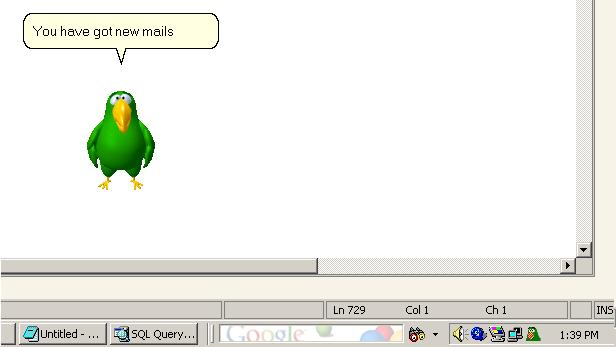

GMan: Your own GMail Reader
 IntroductionThis article will show you how to create your own Gmail Notifier kind of application that checks the new mails using recently introduced Gmail Atom Feeds and speaks the details of the mail using Microsoft Agent. Using Google ATOM feedsGoogle has recently introduced feature that allows you to get an abstract of the mails using ATOM feed reader. We use the WebRequest object to get the ATOM feeds. We can connect to the GMail site at https://mail.google.com/mail/feed/atom This site requires basic authorization that we send in the request headers. The following code shows how to send the request and receive the atom feed. You may have to connect through a proxy. (The code for the proxy usage is not explained here)
wrGETURL = WebRequest.Create("https://mail.google.com/mail/feed/atom");
if(clsMain.g_UseProxy)
{
wrGETURL.Proxy = clsMain.GetProxy();
}
bytes = Encoding.ASCII.GetBytes(txtUserName.Text.Trim() + ":" + txtUserPassword.Text.Trim());
wrGETURL.Headers.Add("Authorization", "Basic " + Convert.ToBase64String(bytes));
Stream feedStream = wrGETURL.GetResponse().GetResponseStream();
NOTE: Differing from the site stated above, the site stated by Google is 'https://gmail.google.com/gmail/feed/atom'. I was not able to connect to this using this code. May be some other kind of authorization is required. The response that you get is in XML Format as shown below:
<?xml version="1.0" encoding="UTF-8"?>
<feed version="0.3" xmlns="http://purl.org/atom/ns#">
<title>Gmail - Inbox for anupshinde</title>
<tagline>New messages in your Gmail Inbox</tagline>
<fullcount>38</fullcount>
<link rel="alternate" href="http://mail.google.com/mail" type="text/html"/>
<modified>2005-09-11T14:01:39Z</modified>
<entry>
<title>New result arrived</title>
<summary>Dear Sir,
A new result has arrived for the following candidate: Name: Anup Shinde
RemoteIP …</summary>
<link rel="alternate" href="http://mail.google.com/mail" type="text/html"/>
<modified>2005-09-11T13:58:15Z</modified>
<issued>2005-09-11T13:58:15Z</issued>
<id>tag:gmail.google.com,2004:1181165390179818642</id>
<author>
<name>anup</name>
<email>anup@micromacs.com</email>
</author>
</entry>
.....
.....
.....
</feed>
In the response, you get at maximum 20 entries. These entries are those of the unread mails only. Parsing the ATOM feedsAtom feeds can be parsed yourself, or you can used a ready made Atom feed parser. Not to take too much trouble creating that, I have used the "Atom.NET" libraries available from the open-source library at http://atomnet.sourceforge.net/ Just download the "Atom.NET.dll" and add a reference to the project. If we are not using proxy, we need not create the web-request as Atom.NET libraries can automatically create it for us. Unfortunately, Atom.Net libraries do not have a support for proxy. So we need to get the response by ourselves and send this response stream to Atom.NET library. Once we create the instance of the Atom feed, we can loop through the entries as shown below.
Stream feedStream = wrGETURL.GetResponse().GetResponseStream();
Atom.Core.AtomFeed myFeed;
myFeed = Atom.Core.AtomFeed.Load(feedStream);
// Get the date and time of the feed.
strFeedTime = myFeed.Modified.DateTime.Day.ToString() + "-"
+ myFeed.Modified.DateTime.ToString("MMM") + "-"
+ myFeed.Modified.DateTime.Year.ToString() + " "
+ myFeed.Modified.DateTime.TimeOfDay.ToString();
feedTime= DateTime.Parse(strFeedTime);
Atom.Core.Collections.AtomEntryCollection ents = myFeed.Entries;
foreach(Atom.Core.AtomEntry ent in ents)
{ {
FromName = ent.Author.Name;
Title = ent.Title.Content;
Content = ent.Summary.Content;
//Do something else
}
Using Microsoft Agent 2.0Once the feeds have been downloaded and parsed, you can do literally anything with it. Our purpose is to speak these feeds for the user using Microsoft Agent 2.0. Most probably you will have the Microsoft Agent installed. Stating the requirements is out of the scope of this article. Please see the Microsoft Agent sites stated below Developers, please see the home page at: http://www.microsoft.com/MSAGENT/default.asp The end user downloads can be found at: http://www.microsoft.com/MSAGENT/downloads/user.asp I found an interesting site that offers Microsoft Agent Character downloads. Please see http://www.e-clips.com.au We will receive feeds in text format, which need to be converted to speech. Don't worry. Microsoft Agent has a simple Speak(text) method, which can be used for this. MS-Agent works using SAPI 4.0. Therefore you will also have to download SAPI 4.0 runtime available from the links above. Windows XP/2000 users will already have these. Without the SAPI 4, you will not be able to hear voice. NOTE: SAPI 5.0 TTS is much better than SAPI4 TTS. It is possible to connect MS-Agent with SAPI5.0 TTS, but that is out of the scope of this article. To use Microsoft Agent in your project, go to the Toolbox and open "Add/Remove Items". Select "Microsoft Agent Control 2.0"(AgentCtl.dll) from COM components and click OK. You can see a component with a "Spy" like icon in the toolbox. You need to place this on the form. The code for using the character is shown below.
// Load the character. Here we did not specify the file path.
// The character will be searched at the default path(s).
agentMain.Characters.Load("agentAssistant", "merlin.acs");
agentRef = agentMain.Characters.Character("agentAssistant");
// Assign a position for the character
agentRef.Left = (short)(this.Left + this.Width + 10);
agentRef.Top = (short)(this.Top + this.Height + 10);
// Show and introduce the character.
agentRef.Show(false);
agentRef.Play("Greet");
agentRef.Play("Explain");
agentRef.Speak("Hi. I will be fetching your Google Mails","");
agentRef.Play("Acknowledge");
agentRef.Speak("You can activate me whenever you want.","");
agentRef.Speak("Bye bye.","");
agentRef.Play("Wave");
agentRef.Hide(false);
The attached codeIn the attached project, there is a method LoadAgent(String AgentFileName) which takes the file name from which the agent has to be loaded. This makes it easier to load multiple agents. To login to the GMail server, I have used a window's form "frmMain" that also asks for saving the username and password. The entire configuration is stored in a file "vals.conf". Since, it is insecure to save un-encrypted username and password; I have converted both of them to Base64 string before saving it to the conf file. (But that is not enough). There are two methods for reading and writing configuration, namely "WriteOptions()" and "ReadOptions". Not some hi-fi coding, but very basic one. I am planning to implement "Application Configuration Blocks" from the Enterprise Library -Patterns and practices for this application. Also there is a timer whose interval is hard-coded to 5 minutes. At every 5 minutes, the application will check for any new mails. To distinguish new mails from the previously "spoken" mails, the last accessed/checked time is stored. Only the mails that came after the "last accessed time" will be spoken. This is demonstrated in the code below. // last_accessed_DateTime is initialized with 1st January, 1900
myFeed = Atom.Core.AtomFeed.Load(feedStream);
strFeedTime = myFeed.Modified.DateTime.Day.ToString() + "-"
+ myFeed.Modified.DateTime.ToString("MMM") + "-"
+ myFeed.Modified.DateTime.Year.ToString() + " "
+ myFeed.Modified.DateTime.TimeOfDay.ToString();
feedTime= DateTime.Parse(strFeedTime);
if( feedTime <= DateTime.Parse(last_accessed_DateTime))
{
return;
}
foreach(Atom.Core.AtomEntry ent in ents)
{
if(i>=max_reads) break;
FromName = ent.Author.Name;
Title = ent.Title.Content;
Content = ent.Summary.Content;
strFeedTime = ent.Modified.DateTime.Day.ToString() + "-"
+ ent.Modified.DateTime.ToString("MMM") + "-"
+ ent.Modified.DateTime.Year.ToString() + " "
+ ent.Modified.DateTime.TimeOfDay.ToString();
entfeedTime= DateTime.Parse(strFeedTime);
if(entfeedTime <= DateTime.Parse(last_accessed_DateTime))
{
i++;
continue;
}
//Do something else
i++;
}
last_accessed_DateTime = feedTime.Day.ToString() + "-"
+ feedTime.ToString("MMM") + "-"
+ feedTime.Year.ToString() + " "
+ feedTime.TimeOfDay.ToString();
The number of mails spoken is also hard-coded to 10. Gmail returns 20 feeds at maximum. EnhancementsI have tried to make it as user-friendly as possible at this time. There are a lot of enhancements for this that I can think of and I am definitely looking forward to make this agent more user-interactive. This is just the beginning. I will keep updating the article here. BackgroundDid you ever day-dream that some morning you wake up and say loud "Hey, check my Inbox" and a reply comes up asking "You have 12 new mails...Should I read those?" You say "Yes" and the mail reading continues. As you get ready for the office/college/school, you interact with the voice and if required, dictate a few replies. As you are about to leave, the voice reminds you for the tasks that have to be done today and then greets you a very good bye. Don't you think that a part of these are regular chores that are usually performed by your room-partner or wife or mom? Well, what was that "Voice"..guess? Yes, that's your PC. There are many computer geeks like me who want to check the mail every hour even when in the bed. No matter if they are important or not. How about checking a mail without lifting a finger or opening your eyes? Certainly this does feel like a sci-fi dream, but for us developers, technologies are available. The current article does not do all of that. But I developed it for personal use and felt like sharing with you all. You can call it as by-product of involvement in a comparatively larger HCI project. I usually have 10-15 mails in the mail box every morning and I find it very useful that I do not have to perform those few clicks for the un-important mails. I would like to tell you that there are many such products available online but most of us use free email accounts, which means no SMTP/POP3 access. Gmail having free POP access, these problems seem to disappear. If time permits, I could be using POP code to access mails instead of Atom feeds. With Google Talk following open communication standards, there are limitless possibilities for developers. How about speaking to your Home PC from the office PC or phone.."Hey, I am coming. Start the AC and keep the coffee ready in 20 minutes". Is it feasible? Yes. My way of doing it: Use a Speech SDK, Google Talk XMPP (or SIP in future) and some hardware interface (make it or purchase it). Enjoy!!!
Author: Anup Shinde Environment: VS.NET-2003, C#, WinXP/2000 Description: Speaking GMail Mails using Microsoft Agent and Gmail ATOM feeds |